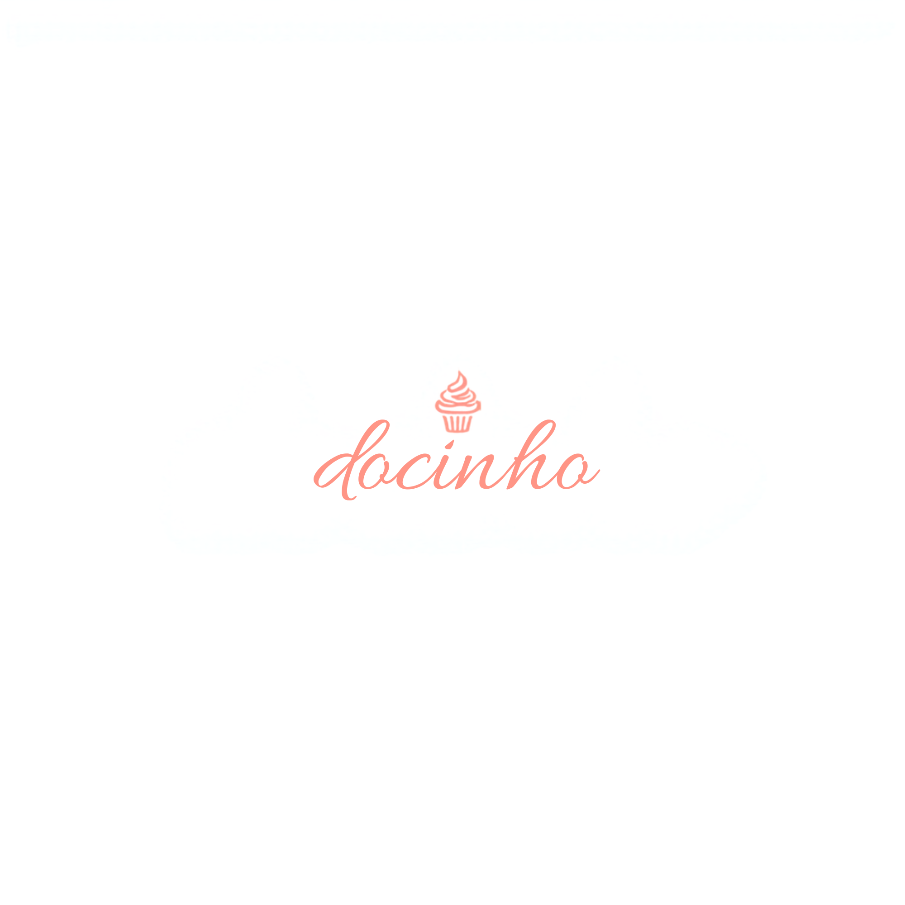

Brigadeiro Gourmet
Chocolate belga, casquinha crocante e aquele recheio cremoso que derrete na boca.
Mais pedidoDocinho da Tia LúciaDoces artesanais com carinho
Brigadeiros, beijinhos e muito mais, preparados um a um na cozinha da Tia Lúcia, para adoçar a festa da sua família.

Tudo começou na cozinha da minha avó, onde eu subia numa banquinha só para ver o brigadeiro sendo mexido na panela. Aprendi que doce bom não tem pressa: é feito com calma, com ingrediente de verdade e, principalmente, com quem a gente ama por perto.
Hoje é a minha cozinha que enche de cheirinho de chocolate derretendo e leite condensado no ponto certo. Cada docinho que sai daqui é enrolado à mão, um por um, pensando na festa de aniversário do seu filho, no chá de bebê da sua irmã ou naquele domingo em família que merece um docinho especial.
Não uso atalhos: ingredientes selecionados, receitas testadas e aprovadas por quem mais entende do assunto — a família. É esse cuidado que faz as pessoas comentarem "esse docinho tem gosto de casa".
Com carinho, Tia Lúcia 💕
Chocolate belga, casquinha crocante e aquele recheio cremoso que derrete na boca.
Mais pedidoDocinho branquinho, macio e com coco fresquinho, enfeitado com um cravinho especial.
Favorito das festasLeite ninho cremoso com um coração de Nutella escondido bem no meio. Surpresa garantida!
Paixão da criançadaUma seleção especial de sabores, montada com carinho para deixar sua mesa de festa linda e completa.
Ideal para eventosConte pra mim a data do seu evento e quantos convidados espera. Eu te ajudo a montar a combinação perfeita de sabores, dentro do seu orçamento e com todo o carinho de sempre.